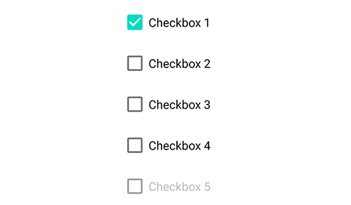

其他布局与控件
其他布局与控件
本节将介绍其他的控件和布局。
复选框控件: checkbox
参见Android CheckBox。
checkbox控件即复选框，提供勾选交互的控件。

text
checkbox控件的文本，显示在勾选框后面。实际上checkbox控件继承于text和button控件，它们的属性也可以用在checkbox上，比如textSize,
textStyle。
checked
设置checkbox的选中状态，当checked="true"为选中选项框，否则为未选中选项框。可以通过attr方法动态设置勾选框的状态。比如：$ui.checkbox1.attr("checked", "true")。
enabled
设置复选框是否是启用的，若enabled="false"则为禁用状态，显示未灰色，无法交互。
isChecked()
- 返回 {boolean}
通过isChecked可以检测选项框当前是否被选中。如果被选中则返回为true，否则为false。
事件: check
checked{boolean} 是否被勾选view{View} 当前事件的View
当用户勾选/取消勾选选项框时会触发该事件。
"ui";
ui.layout(
<vertical padding="16">
<checkbox id="cb1" text="复选框"/>
<checkbox id="cb2" checked="true" text="勾选的复选框"/>
<checkbox id="cb3" text="被禁用的复选框" enabled="false"/>
</vertical>
);
ui.cb1.on("check", (checked) => {
if (checked) {
toast("第一个框被勾选了");
} else {
toast("第一个框被取消勾选了");
}
});
// 修改cb3的checked属性
$ui.cb3.attr("checked", "true");
单选框控件: radio
参见Android RadioButton。
单选框只能选中一个选项，一般与radiogroup搭配使用。
text
radio控件的文本，显示在单选框后面。实际上radio控件也继承于text和button控件，它们的属性也可以用在radio上，比如textSize,
textStyle。
checked
设置radio单选框的选中状态，当checked="true"为选中选项框，否则为未选中选项框。
enabled
设置单选框是否是启用的，若enabled="false"则为禁用状态，显示未灰色，无法交互。
isChecked()
- 返回 {boolean}
返回选项框是否被选中，是则返回true，否则返回false。例如$ui.radio1.isChecked()。
事件: check
checked{boolean} 是否被勾选view{View} 当前事件的View
当用户勾选/取消勾选选项框时会触发该事件。
"ui";
ui.layout(
<vertical padding="16">
<radio id="radio1" text="单选框1"/>
<radio id="radio2" text="单选框2"/>
<radio id="radio3" text="已勾选的单选框3" checked="true"/>
</vertical>
);
// 监听单个radio的选中
$ui.radio2.on("check", (checked) => {
if (checked) {
toastLog("单选框2被勾选了");
} else {
toastLog("单选框2被取消勾选了");
}
});
单选框组合: radiogroup
参见Android RadioGroup。
radiogroup单选框组合提供了几个单选框radio选项，但用户至多只能选择其中一个选项，即实现选项选中互斥功能。
checkedButton
设置radiogroup单选框组合中初始勾选的单选框id。例如checkedButton="@+id/radio5"，则使id为radio5的单选框选项为初始勾选状态。
"ui";
$ui.layout(
<vertical padding="16">
<radiogroup checkedButton="@+id/radio5">
<radio id="radio4" text="单选框4"/>
<radio id="radio5" text="初始勾选的单选框5"/>
<radio id="radio6" text="单选框6"/>
</radiogroup>
</vertical>
);
setOnCheckedChangeListener(listener)
listener{Function} 勾选监听的回调函数，其参数为group{RadioGroup} 发生勾选变化事件的radiogroup对象checkedId{number} 被勾选的radio的id，是一个整数；若当前没有任何单选框被勾选，则为-1
设置某个radiogroup单选框组合中的单选框被选中时的监听。需要注意的是这里的checkedId是一个整数，并不是类似于radio5这样的id字符串，我们可以通过findViewById()函数来获取具体被勾选的单选框，比如：
"ui";
$ui.layout(
<vertical padding="16">
<radiogroup id="radiogroup1">
<radio id="radio1" text="单选框1"/>
<radio id="radio2" text="单选框2"/>
<radio id="radio3" text="单选框3"/>
</radiogroup>
</vertical>
);
$ui.radiogroup1.setOnCheckedChangeListener((group, checkedId) => {
// 根据整数id获取勾选的radio控件
let checkedRadio = $ui.radiogroup1.findViewById(checkedId);
switch (checkedRadio) {
case $ui.radio1:
toastLog("单选框1被勾选");
break;
case $ui.radio2:
toastLog("单选框2被勾选");
break;
case $ui.radio3:
toastLog("单选框3被勾选");
break;
default:
toastLog("没有任何单选框被勾选");
break;
}
});
getCheckedRadioButtonId()
- 返回 {number}
获取单选框组合中的已勾选的单选框选项的整数ID，若当前没有任何单选框被勾选，则为-1。
需要注意的是这里的checkedId是一个整数，并不是类似于radio5这样的id字符串，我们可以通过findViewById()函数来获取具体被勾选的单选框。
进一步，我们可以通过indexOfChild获取被勾选的单选框在radiogroup中的位置。
例如：
"ui";
$ui.layout(
<vertical padding="16">
<radiogroup id="radiogroup2">
<radio id="radio4" text="单选框4"/>
<radio id="radio5" text="单选框5"/>
<radio id="radio6" text="单选框6"/>
</radiogroup>
<button id="get" text="获取当前勾选项"/>
</vertical>
);
$ui.get.on('click', () => {
// 获取radiogroup2勾选的单选框ID
let checkedId = $ui.radiogroup2.getCheckedRadioButtonId();
if (checkedId === -1) {
toastLog("没有任何单选框被勾选");
} else {
// 根据id获取勾选的radio
let checkedRadio = $ui.radiogroup2.findViewById(checkedId);
// 获取勾选的位置
let i = $ui.radiogroup2.indexOfChild(checkedRadio);
toastLog("当前勾选的单选框的文本: " + checkedRadio.getText().toString() + ", 位置: " + i);
}
});
clearCheck()
清空单选框组合的各单选框选项的勾选状态。也即让单选框组合重置为未勾选状态。
"ui";
$ui.layout(
<vertical padding="16">
<checkbox id="cb1" text="复选框"/>
<radiogroup id="radiogroup1">
<radio id="radio1" text="单选框1"/>
<radio id="radio2" text="单选框2"/>
<radio id="radio3" text="单选框3"/>
</radiogroup>
<button id="clear" text="清空选择"/>
</vertical>
);
$ui.clear.on('click', () => {
// 清空单选框选择
$ui.radiogroup1.clearCheck();
// 设置复选框为不勾选
$ui.cb1.attr("checked", "false");
});
开关控件: Switch
参见Android Switch。
开关控件用于表示一个选项是否被启用。

text
Switch控件的文本，显示在框后面。实际上Switch控件也继承于text和button控件，它们的属性也可以用在Switch上，比如textSize,
textStyle。
checked
设置Switch开关的开启状态，当checked="true"时为开启。
enabled
设置Switch开关是否是启用的，若enabled="false"则为禁用状态，显示未灰色，无法交互。
isChecked()
- 返回 {boolean}
返回Switch控件是否是开启状态。比如$ui.switch1.isChecked()。
事件: check
checked{boolean} 是否被勾选view{View} 当前事件的View
当用户勾选/取消勾选选项框时会触发该事件。
"ui";
ui.layout(
<vertical padding="16">
<Switch id="sw" text="单选框1"/>
</vertical>
);
// 监听的选中
$ui.sw.on("check", (checked) => {
if (checked) {
toastLog("switch被打开了");
} else {
toastLog("switch被关闭了");
}
});
进度条控件:
参见Android ProgressBar。
progressbar即进度条控件，显示某种操作的进度及百分比。通过修改进度条控件的参数可以修改进度条的呈现形式，默认为无限圆形进度条。
indeterminate
- {boolean}
是否为无限进度条，默认为true。可选的值为：
true显示无限进度条false显示有限进度条
progress
- {number}
进度条的进度，为一个整数，默认范围是0~100。
min
- {number}
进度条的最小进度，默认为0。
max
- {number}
进度条的最大进度，默认为100。
progressDrawable
- {string}
定义用于在progress模式下绘制进度条的drawable。
progressBackgroundTint
- {string}
对progress的背景应用颜色。不修改当前的着色模式。
progressBackgroundTintMode
- "add" | "multiply" | "screen" | "src_atop" | "src_in" | "src_over"
将progressBackgroundTint指定的色调应用到进度背景的混合模式。
progressTint
- {string}
将颜色应用于整个可绘制的进度。不修改当前的着色模式。
progressTintMode
- "add" | "multiply" | "screen" | "src_atop" | "src_in" | "src_over"
将progressTint指定的色调应用到进度背景的混合模式。
secondaryProgress
- {number}
设置次要进度的值。如果进度条处于indeterminate（无限进度条）模式，则不执行任何操作。
secondaryProgressTint
- {string}
对secondaryProgress应用色调（如果存在）。不修改当前的着色模式。
secondaryProgressTintMode
- "add" | "multiply" | "screen" | "src_atop" | "src_in" | "src_over"
将secondaryProgressTint指定的色调应用到辅助进度指示器的混合模式。
style
- {string}
设置进度条的宽度、布局样式。可选的值有：
@style/Base.Widget.AppCompat.ProgressBar.Horizontal水平直线进度条@style/Base.Widget.AppCompat.ProgressBar圆形进度条
拖动条控件: seekbar
参见Android SeekBar。
可调节进度条，类似于progressbar，但用户可以拖动控件来调节进度条。
seekbar继承自progressbar，因此progressbar的属性它都能使用。
通过方法setOnSeekBarChangeListener可监听seekbar的拖动进度，通过[getProgress(https://developer.android.google.cn/reference/android/widget/ProgressBar#getProgress())]方法可随时获得seekbar的当前进度。
"ui";
$ui.layout(
<vertical>
<seekbar id="seekbar" max="200"/>
<button id="ok" text="确定"/>
</vertical>
);
$ui.ok.on('click', () => {
toastLog('进度条当前进度:', $ui.seekbar.getProgress());
});
$ui.seekbar.setOnSeekBarChangeListener({
onProgressChanged: (seekbar, progress, fromUser) => {
consoloe.log('进度: ', progress);
},
});
下拉菜单控件: spinner
参见Android Spinner。
点击下拉箭头，可弹出多个选项供用户选择。
spinnerMode
- {string}
下拉菜单的呈现模式。默认为dropdown下拉菜单形式。
dialog使用对话框模式菜单来选择spinner选项。dropdown使用下拉模式菜单来选择spinner选项。
dropDownHorizontalOffset
- {string}
为spinner的选择弹出窗口设置水平偏移。仅在spinnerMode=dropdown时有效。
dropDownVerticalOffset
- {string}
为spinner的选择弹出窗口设置垂直偏移。仅在spinnerMode=dropdown时有效。
dropDownWidth
- {string}
设置spinner的选择弹出窗口的宽度。仅在spinnerMode=dropdown时有效。
popupBackground
- {string}
为spinner的选择弹出窗口设置背景。仅在spinnerMode=dropdown时有效。
prompt
- {string}
设置显示对话框时显示的提示。
textStyle
- {string}
设置spinner当前被选择的项目文本的样式，例如bold(加粗),
italic(斜体)等。
textColor
- {string}
设置spinner当前被选择的项目文本的颜色，例如bold(加粗),
italic(斜体)等。
textSize
- {string}
设置spinner当前被选择的项目文本的字体尺寸大小。
entries
- {string}
下拉菜单的选项具体内容。若有多个选项，可使用|隔开，例如entries="选项1|选项2|选项3"。在代码中也可动态修改，比如$ui.spinner.attr('entries', '选项A|选项B|选项C|选项D')。
entryTextStyle
- {string}
下拉菜单的选项具体内容的文本样式。
entryTextColor
- {string}
下拉菜单的选项具体内容的文本颜色。
entryTextSize
- {string}
下拉菜单的选项具体内容的字体尺寸大小。
时间选择控件: timePicker
参见Android TimePicker。
用户可以选择24小时内的任意时间，呈现内容为上午/下午 XX（时）：XX（分）。
timePickerMode
- {string}
时间选择界面的呈现模式。若用户在timePicker控件中未指定timePickerMode，则默认使用时钟样式clock时间选择。
spinner滑动样式时间选择模式。clock时钟样式。
日期选择控件: datePicker
参见Android DatePicker。
用户可以选择日期，呈现内容为"MM/dd/yyyy"，日历样式日期选择模式还可呈现该日期的星期，如周二。
datePickerMode
- {string}
日期选择界面的呈现模式。若用户在datePicker控件中未指定datePickerMode，则默认使用日历样式calendar时间选择。
spinner滑动样式日期选择模式。calendar日历样式选择模式。
spinnersShown
- {boolean}
设置是否显示spinner滑动样式日期选择模式。
calendarViewShown
- {boolean}
设置是否显示日历样式。
firstDayOfWeek
- {number}
设置一周的第一天。范围为1~7，分别代表周日~周六。默认为1，也即周日。
maxDate
- {string}
设置此datePicker支持的最大日期，格式为yyyy/MM/dd。
minDate
- {string}
设置此datePicker支持的最小日期，格式为yyyy/MM/dd。
浮动按钮控件: fab
浮动按钮是UI界面上的一个浮动的图标，它的颜色、图标、位置在UI界面中有着明显的区别，通常是为了突出一个重要的功能点，引导用户点击来执行重要/频繁的操作。
src
指定浮动按钮的图标，其格式与图片控件属性src一致，比如@drawable/ic_add_black_48dp，https://图片网址等。
以下是一个放在右下角的浮动按钮的例子：
"ui";
ui.layout(
<frame>
<fab id="add" w="auto" h="auto" src="@drawable/ic_add_black_48dp"
margin="16" layout_gravity="bottom|right" tint="#ffffff" />
</frame>
);
ui.add.on("click", () => {
toastLog("浮动按钮被点击了");
});
标题栏控件: toolbar
应用程序中使用的标题栏。
logo
为标题栏设置一个可绘制的logo。
logoDescription
为标题栏设置logo的描述。
navigationIcon
为标题栏设置导航按钮的内容描述（如果存在）。内容描述将通过屏幕阅读器或其他辅助系统阅读，以解释导航按钮的操作。
popupTheme
指定标题栏弹出菜单时使用的主题。默认情况下，使用与标题栏本身相同的主题。
title
设置此标题栏的标题。标题应该用作内容部分的锚点。它应该描述或命名正在查看的内容。
titleTextColor
设置此标题栏的标题的文本颜色。
titleMargin
设置标题边距。
titleMarginBottom
设置底部标题边距。
titleMarginTop
设置顶部标题边距。
titleMarginStart
设置起始标题边距。
titleMarginEnd
设置结束标题边距。
subtitle
设置此标题栏的副标题。
subtitleTextColor
设置此标题栏的副标题的文本颜色。
卡片: card
卡片控件是一个拥有圆角、阴影的控件。
cardBackgroundColor
卡片的背景颜色。比如cardBackgroundColor="#ffffff"。
cardCornerRadius
卡片的圆角半径。
cardElevation
设置卡片在z轴上的高度，来控制阴影的大小。
contentPadding
设置卡片的内边距。该属性包括四个值：
contentPaddingLeft左内边距contentPaddingRight右内边距contentPaddingTop上内边距contentPaddingBottom下内边距
foreground
使用foreground="?selectableItemBackground"属性可以为卡片添加点击效果。
抽屉布局: drawer
列表: list
参见Android RecyclerView。
事件: item_click
当用户点击一个List中的项时会触发该事件。
"ui";
$ui.layout(
<frame>
<list id="list">
<vertical>
<text id="name" textSize="16sp" textColor="#000000" text="姓名: {{name}}"/>
<text id="age" textSize="16sp" textColor="#000000" text="年龄: {{age}}岁"/>
</vertical>
</list>
</frame>
);
var items = [{
name: "小明",
age: 18
}, {
name: "小红",
age: 30
}
];
$ui.list.setDataSource(items);
$ui.list.on("item_click", function(item, i, itemView, listView) {
toast("被点击的人名字为: " + item.name + "，年龄为: " + item.age);
});
事件: item_click
item{any} 被点击的列表项的数据i{number} 被点击的列表项的位置itemView{View} 被点击的列表项的ViewlistView{View} 当前列表控件
当用户点击一个List中的项时会触发该事件。
"ui";
$ui.layout(
<frame>
<list id="list">
<vertical>
<text id="name" textSize="16sp" textColor="#000000" text="姓名: {{name}}"/>
<text id="age" textSize="16sp" textColor="#000000" text="年龄: {{age}}岁"/>
</vertical>
</list>
</frame>
);
var items = [{
name: "小明",
age: 18
}, {
name: "小红",
age: 30
}
];
$ui.list.setDataSource(items);
$ui.list.on("item_click", function(item, i, itemView, listView) {
toast("被点击的人名字为: " + item.name + "，年龄为: " + item.age);
});
事件: item_long_click
event{object} 事件，字段有：consumed{boolean} 设置此事件是否被消费view{View} 此事件对应的View
item{any} 被点击的列表项的数据i{number} 被点击的列表项的位置itemView{View} 被点击的列表项的ViewlistView{View} 当前列表控件
当用户长按一个List中的项时会触发该事件。
事件: item_bind
itemView{View} 当前列表项的ViewitemHolder{object} 当前列表项的管理对象，可动态获取列表项的位置和数据。item{any} 获取列表项的数据position{number} 获取列表项的位置
当列表创建一个新的列表项的View时触发该事件。实际上列表控件不会为列表控件的每个项目创建一个单独的View，假设列表为2000个，屏幕最多显示10个，那么列表控件只会创建10个左右的View。
这个事件通常用于对列表项的View设置事件回调，比如：
"ui";
$ui.layout(
<frame>
<list id="list">
<vertical>
<text id="name" textSize="16sp" textColor="#000000" text="姓名: {{this.name}}"/>
<checkbox id="checkbox" checked="{{this.checked}}"/>
</vertical>
</list>
</frame>
);
var items = [
{
name: "小明",
checked: false
}, {
name: "小红",
checked: false
}
];
$ui.list.setDataSource(items);
$ui.list.on("item_bind", function(itemView, itemHolder) {
itemView.checkbox.on("check", function (checked) {
let item = itemHolder.item;
item.checked = checked;
console.log(item);
});
});
事件: item_data_bind
itemView{View} 当前列表项的ViewitemHolder{object} 当前列表项的管理对象，可获取列表项的位置和数据。item{any} 获取列表项的数据position{number} 获取列表项的位置
当列表将一个列表项的数据绑定到列表项的View时触发该事件。
"ui";
$ui.layout(
<frame>
<list id="list">
<vertical>
<text id="name" textSize="16sp" textColor="#000000" text="姓名: {{this.name}}"/>
<checkbox id="checkbox" checked="{{this.checked}}"/>
</vertical>
</list>
</frame>
);
var items = [{
name: "小明",
checked: false
}, {
name: "小红",
checked: false
}
];
$ui.list.setDataSource(items);
$ui.list.on("item_data_bind", function (itemView, itemHolder) {
let item = itemHolder.item;
itemView.name.setTextColor(item.checked ? $colors.RED : $colors.BLACK);
});
$ui.list.on("item_bind", function(itemView, itemHolder) {
itemView.checkbox.on("check", function (checked) {
let item = itemHolder.item;
item.checked = checked;
$ui.list.getAdapter().notifyItemChanged(itemHolder.position);
});
});
选项卡: tab
参见Android TabLayout。
选项卡布局。
tabGravity
设置布局选项卡时使用的gravity重力。可以参考博客tabMode和tabGravity配合使用效果对比。
tabIndicatorColor
为当前选定的选项卡设置选项卡指示器的颜色。
tabIndicatorHeight
为当前选定的选项卡设置选项卡指示器的高度。
tabMode
设置此布局中选项卡的行为模式。包括：
fixed固定选项卡同时显示所有选项卡，最适合与受益于选项卡之间快速旋转的内容一起使用。scrollable可滚动选项卡在任何给定时刻显示选项卡的子集，并且可以包含更长的选项卡标签和更多的选项卡。当用户不需要直接比较选项卡标签时，它们最适合用于浏览触摸界面中的上下文。
tabTextColor
设置用于选项卡的正常状态的文本颜色。
tabSelectedTextColor
设置用于选项卡的选定状态的文本颜色。
控制台: console
控制台控件可以在UI界面显示日志，类似于Auto.js内置的控制台界面。
此控制台控件仅显示当前脚本的日志，若要显示全部脚本的日志，请使用全局控制台。
"ui";
$ui.layout(
<vertical>
<appbar>
<toolbar id="toolbar" title="UI中显示控制台" />
</appbar>
<console id="console" w="*" h="*" />
</vertical>
);
// 设置控制台
$ui.console.setConsole(runtime.console);
// 设置输入框颜色
$ui.console.input.setTextColor(colors.BLACK);
// 隐藏输入框
$ui.console.setInputEnabled(false);
// 自定义日志颜色
$ui.console.setColor("V", "#bdbdbd");
$ui.console.setColor("D", "#795548");
$ui.console.setColor("I", "#1de9b6");
$ui.console.setColor("W", "#673ab7");
$ui.console.setColor("E", "#b71c1c");
// 自定义日志字体大小，单位sp
$ui.console.setTextSize(16);
在原生模式下，此控件的类名为com.stardust.autojs.core.console.ConsoleView。
console.setConsole(con)
con{Console} 控制台对象
绑定控制台对象。设置后控制台控件才能显示控制台的日志。例如$ui.console.setConsole(runtime.console)。
ui.console.setInputEnabled(enabled)
enabled{boolean}
设置控制台输入框是否启用。
console.getInput()
- 返回 {EditText}
获取控制台的输入框控件。
console.setColor(level，color)
level{string} 日志等级，可以为V，D，I，W，E，A等级别color{number} | {string} 日志颜色
设置日志的颜色。
console.setTextSize(size)
size{number} 字体大小
设置控制台的日志字体大小，单位为sp。
全局控制台: globalconsole
全局控制台控件是一个读取日志文件并显示的控件，通常用来显示全局日志。
在原生模式下，此控件的类名为com.stardust.autojs.core.console.FileConsoleView。
"ui";
$ui.layout(
<vertical>
<appbar>
<toolbar id="toolbar" title="UI中显示控制台" />
</appbar>
<globalconsole id="globalconsole" w="*" h="*" />
</vertical>
);
$ui.globalconsole.setColor("D", "#000000");
globalconsole.setColor(level，color)
level{string} 日志等级，可以为V，D，I，W，E，A等级别color{number} | {string} 日志颜色
设置日志的颜色。
globalconsole.setLogFile(file)
file{string} 日志文件路径
设置日志文件的路径。若不设置，则为默认日志文件。
globalconsole.clear()
清空控件的日志内容。此操作不会清空日志文件。
若要清空日志文件的内容，请删除日志文件后再调用clear函数。